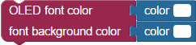
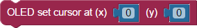
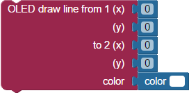
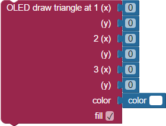
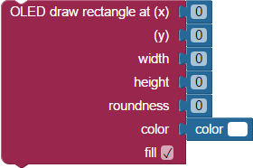
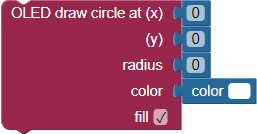

BlocklyProp reference for OLED blocks


 Available for Activity Board, FLiP, and Other board types. Not available for Badge or Scribbler Robot board types. I/O pin availability will vary with board type.
Available for Activity Board, FLiP, and Other board types. Not available for Badge or Scribbler Robot board types. I/O pin availability will vary with board type.
The 96 x 64 Color OLED display module (#28087) uses a coordinate grid to define where text, numbers, points, lines, and shapes can be drawn on the display module’s screen. The coordinates start at 0 (leftmost column), 0 (top row) and increase to 95 (rightmost column), 63 (bottom row).
See the OLED Display with BlocklyProp tutorial to get started.

WARNING! The OLED blocks can only be used from your main program. These blocks will not work if used inside function blocks that are then launched with the new processor block.
OLED initialize
The OLED initialize block is used to set up the Color OLED display module. The DIN, CLK, CS, D/C, and RES pins on the module must be matched to the Propeller I/O pins they are connected to.
If you forget to use this block in your project, other OLED blocks will display a triangle warning symbol. Click the triangle, and you will see a reminder message to use the OLED initialize block at the beginning of your program.

OLED font loader
The OLED font loader block must be run as its own program (with no other blocks) before any medium or large fonts can be used. When this block is run, it takes about a minute to load all of the fonts onto the EEPROM memory chip on the Propeller Activity Board.
The fonts are stored in EEPROM locations 40576..63400.
OLED max height
The OLED max height block returns the vertical value of the bottom row of pixels: 63.
OLED max width
The OLED max width block returns the horizontal value of the rightmost column of pixels: 95.
OLED command
The OLED command block permits you to choose and execute the command selected from the dropdown menu:
- clear screen: clears the entire screen by setting all pixels to black.
- sleep: turns off the display, while preserving what was drawn on it.
- wake: takes the display out of sleep mode.
- invert: Inverts all of the colors on the display.
OLED font color

The OLED font color block is used to set both the color of the font and the background (highlight) color displayed behind the font characters. If the background color is set to the same color as the font color, the background will be made transparent.
OLED set text
The OLED set text block is used to set the size (small: 5x7, medium: 11x15, large: 17x23) and the font face (sans/console, serif/typewriter, script/handwriting, bubble/cartoon).
OLED set cursor

The OLED set cursor block sets the top left pixel position where text starts being written.
OLED print text

The OLED print text block is used to send text strings to the OLED module.
OLED print number
The OLED print number block is used to send numbers to the OLED module. Numbers can be displayed as decimal, hexadecimal, or binary numbers.
OLED print multiple

The OLED print multiple block can print several terms of different types on a single line. Click the gear icon to drag additional terms into the list, then attach appropriate values to the block. Options are:
- text
- decimal number
- hexadecimal number
- binary number
- floating point number
- ASCII character
Checking the Specify Digits block adds a fill-in field next to all attached number values.
Floating point number option
BlocklyProp uses integer numbers. The floating point number option allows an integer value to be displayed as a decimal number. Use its drop-down menu to divide the integer by a multiple of 10 to scale and display the number appropriately. The specify digits checkbox activates an additional field by each numeric term.
OLED draw pixel
The OLED draw pixel block sets the pixel defined by the first two value blocks to the color defined by the color block.
OLED draw line

The OLED draw line block draws a line from the first coordinate to the second coordinate in the color defined by the color block.
OLED draw triangle

The OLED draw triangle block draws a triangle from the first coordinate to the second coordinate to the third coordinate in the color defined by the color block. The “fill” checkbox sets whether the triangle will be drawn as hollow or filled.
OLED draw rectangle

The OLED draw rectangle block draws a rectangle from the first coordinate (top left corner of the rectangle) to the second coordinate (bottom right corner of the rectangle) in the color defined by the color block. The “roundness” value, if set to something other than zero, will round the corners by the amount specified (radius of the roundness). The “fill” checkbox sets whether the rectangle will be drawn as hollow or filled.
OLED draw circle

The OLED draw circle block will draw a circle whose center is set by the first two value blocks, and in the color defined by the color block. The “fill” checkbox sets whether the circle will be drawn as hollow or filled.